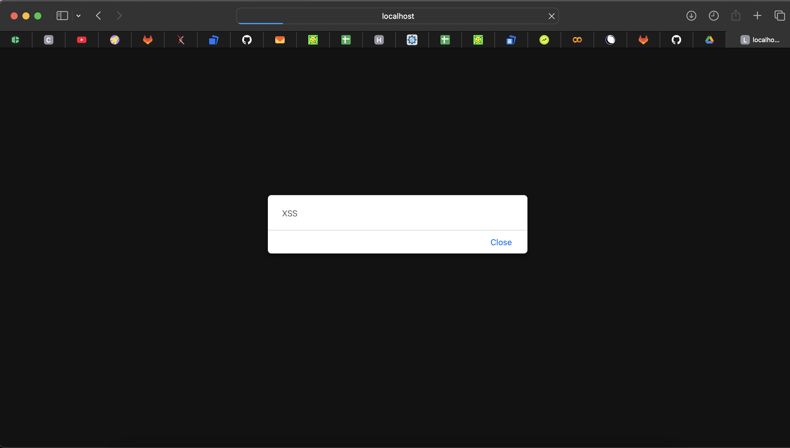

Тема: симуляция XSS-атаки.
Я искал CVE за 2021 год по словам XSS, PHP, WordPress, plugin, CWE-79. Таких уязвимостей оказалось реально много.
По NVD за 2021 год получилось примерно 21957 CVE. Число может чуть отличаться из-за фильтров, но главный вывод такой: даже за один год уязвимостей очень много.
Источник:
https://nvd.nist.gov/vuln/search
Источники:
https://nvd.nist.gov/vuln/detail/CVE-2021-29625
https://github.com/advisories/GHSA-2v82-5746-vwqc
Что за компонент:
Adminer — это PHP-инструмент для управления базами данных через браузер. Более легкая альтернатива phpMyAdmin. Через него можно смотреть таблицы, выполнять SQL-запросы и менять данные.
Суть уязвимости:
В Adminer 4.6.1–4.8.0 была XSS-уязвимость в обработке ссылки doc_link. Данные недостаточно нормально экранировались и могли попасть в HTML.
Причина:
Пользовательские данные выводились на страницу без безопасного экранирования.
Последствия:
Можно было заставить браузер пользователя выполнить JavaScript-код. Неприятно, особенно если пользователь сидит под админкой.
Источники:
https://nvd.nist.gov/vuln/detail/CVE-2021-34641
https://www.wordfence.com/vulnerability-advisories/
Что за компонент:
SEOPress — это WordPress-плагин для SEO. Он помогает настраивать title, description, meta-теги, sitemap и др.
Суть уязвимости:
В SEOPress 5.0.0–5.0.3 была Stored XSS. Авторизованный пользователь мог вставить вредоносный JS через поля title/description.
Причина:
Ввод плохо проверялся и потом выводился в админке без нормальной обработки.
Последствия:
Скрипт сохранялся и выполнялся у других пользователей, которые открывали эту страницу. То есть баг не одноразовый, а сохраняемый.
Сначала я скачал образ:
docker pull ket9/otus-devsecops-xssПотом запустил контейнер:
docker run -d -p 8080:80 ket9/otus-devsecops-xss:latestПосле этого открыл приложение:
http://localhost:8080/На странице были разные задания. Я выбрал XSS-1, потому что там есть поле для комментария и сразу понятно, куда можно попробовать вставить payload.
Сначала я ввел обычный текст:
hello testОн появился на странице после сохранения. Значит, приложение берет мой ввод и вставляет его обратно в HTML.
Потом я ввел payload:
<script>alert('XSS')</script>После сохранения и обновления страницы появилось alert-окно с текстом XSS.

Вывод: JS реально выполнился в браузере, значит XSS есть.
Тип: Stored XSS.
Почему Stored:
Также это относится к CWE-79 — неправильная обработка пользовательского ввода при генерации HTML.
Если бы это был реальный сайт, через такую дыру можно было бы украсть cookie, токены, подменить страницу или сделать действие от имени пользователя.
Главная идея: нельзя просто брать пользовательский ввод и вставлять его в HTML как есть.
Опасные символы надо заменять на безопасные HTML-сущности:
| Символ | Замена |
|---|---|
< |
< |
> |
> |
" |
" |
' |
' |
& |
& |
В PHP можно сделать так:
htmlspecialchars($comment, ENT_QUOTES, 'UTF-8');Тогда <script>alert('XSS')</script> будет показан как текст, а не выполнится как код.
Для комментариев лучше запрещать или удалять:
<script> и </script>;onerror, onclick, onload;javascript: в ссылках;Если HTML в комментариях не нужен, проще разрешить только обычный текст. Меньше свободы — меньше шансов словить баг.
Черный список легко обойти, потому что payload-ов миллион. Лучше разрешать только безопасные символы: буквы, цифры, пробелы и обычную пунктуацию.
Можно добавить заголовок:
Content-Security-Policy: default-src 'self'; script-src 'self'Это не фиксит проблему полностью, но сильно усложняет выполнение inline-скриптов.
Проверки только в браузере не считаются защитой, потому что их легко обойти. Нормальная обработка должна быть именно на сервере.
Я нашел две CVE за 2021 год с XSS в PHP-компонентах и провел атаку на тестовом стенде.